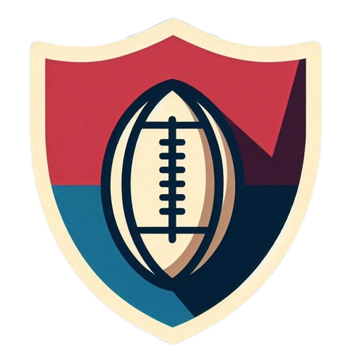

R.C. Osasuna Rugby vs. Dragones de Irún
Fecha: Sábado, 5 de octubre, 16:00

Estadio: Estadio El Sadar Rugby Field, Pamplona
Descripción: El R.C. Osasuna se enfrenta a un fuerte equipo de los Dragones de Irún en lo
que
promete ser un encuentro lleno de intensidad y estrategia.